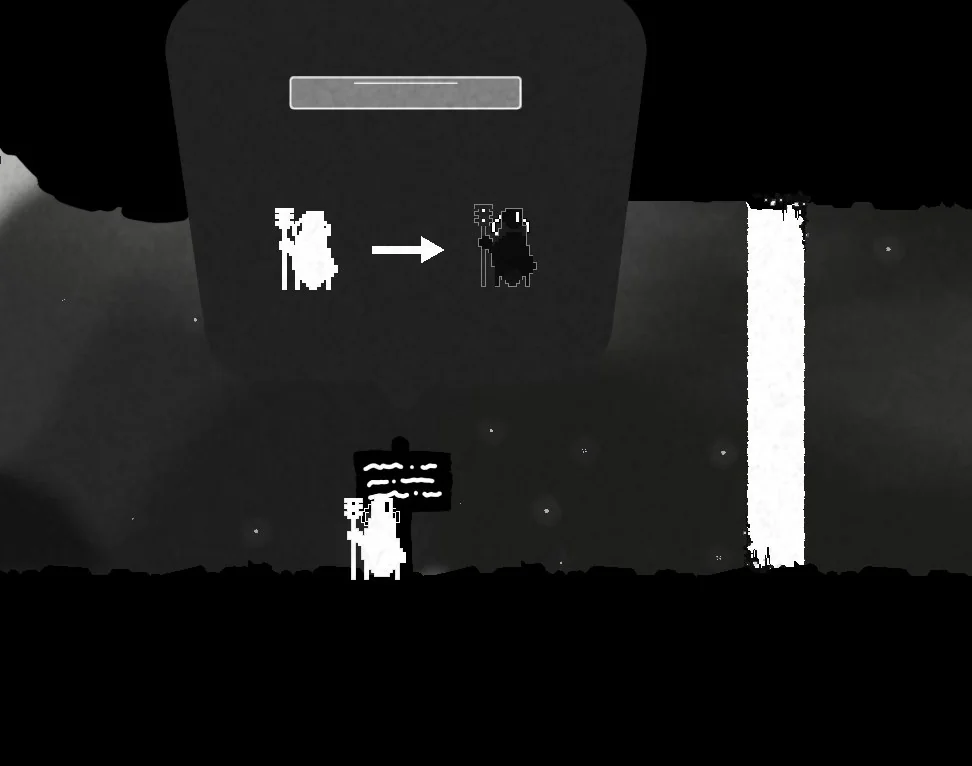
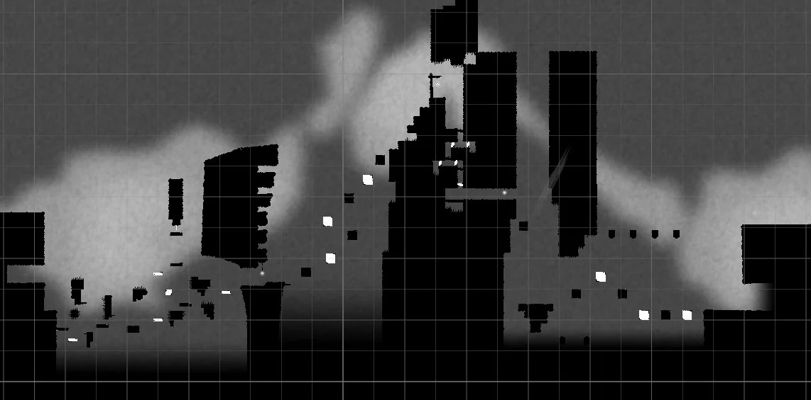
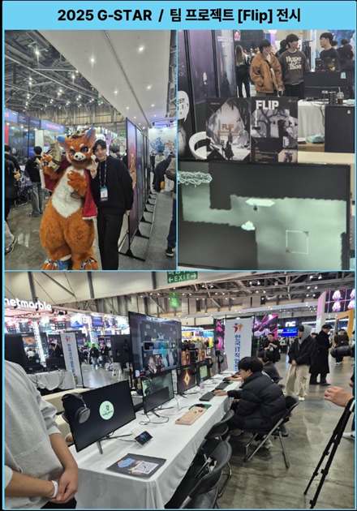

LEVEL DESIGN · UNITY
전환 타이밍을 판단하는 레벨
흑백 전환에 따라 달라지는 발판과 장애물을 배치했습니다. 배운 조작을 응용해 스테이지를 돌파하도록 플레이 흐름을 설계했습니다.
프로젝트FLIP · 2D 플랫포머
담당레벨 디자인, 에셋·사운드 리서치
제작 도구Unity
전시2025 G-STAR
TEAM PROJECT · FLIP
플레이 장면을 먼저 보고, 아래에서 담당한 작업과 설계 의도를 확인할 수 있습니다.
흑백 전환에 따라 달라지는 발판과 장애물을 배치했습니다. 배운 조작을 응용해 스테이지를 돌파하도록 플레이 흐름을 설계했습니다.
MY CONTRIBUTION · FLIP
FLIP은 흑백 전환으로 장애물을 통과해 퍼즐을 푸는 2D 플랫포머입니다. 레벨 진행 흐름과 구간별 난이도를 구성하고, 오브젝트 동작과 기믹을 구상한 뒤 직접 플레이하며 의도한 흐름이 전달되는지 확인했습니다.
스테이지의 시작부터 다음 목표까지 진행 흐름을 정리하고, 구간마다 필요한 오브젝트를 배치했습니다. 오브젝트를 단계적으로 구성해 플레이가 진행될수록 난이도가 조정되도록 설계했습니다.
각 구간의 진행 방식과 난이도를 고려해 오브젝트의 동작 방식과 기믹을 구상했습니다. 직접 플레이하며 배치와 난이도를 확인하고, 테스트 결과를 바탕으로 레벨을 보완했습니다.
게임 콘셉트와 분위기에 어울리는 배경·캐릭터·UI·장애물 이미지를 찾고, BGM과 효과음 자료도 조사해 수집했습니다. 시각 요소와 사운드가 FLIP의 흑백 세계관에 어울리는지 살펴보며 팀의 제작 참고 자료를 정리했습니다.
작업 흐름


2025 · PROJECT EXHIBITION
교내 팀 프로젝트로 제작한 2D 플랫포머 FLIP을 2025 G-STAR에 전시하고 부스를 운영했습니다. 현장에서 관람객의 플레이를 지켜보며, 제작자가 의도한 진행 방식과 관람객이 실제로 플레이하는 방식 사이의 차이를 확인했습니다.
관람객의 플레이를 관찰하고 피드백을 받으며 제작 과정에서 놓친 부분을 이용자 관점에서 돌아볼 수 있었습니다. 기획 의도를 세우는 데서 끝나는 것이 아니라 실제 플레이 경험을 현장에서 확인하고 검증하는 과정까지 중요하다는 점을 배웠습니다.
